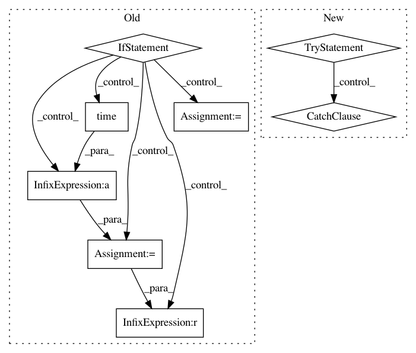

1e882d05cab139530b2859bf4940c681f5b4b5e2,mne/viz/_brain/_timeviewer.py,_TimeViewer,play,#_TimeViewer#,422
Before Change
self.playback_speed = speed
def play(self):
if self.playback:
this_time = time.time()
delta = this_time - self._last_tick
self._last_tick = time.time()
time_data = self.brain._data["time"]
times = np.arange(self.brain._n_times)
time_shift = delta * self.playback_speed
max_time = np.max(time_data)
time_point = min(self.brain._current_time + time_shift, max_time)
// always use linear here -- this does not determine the data
// interpolation mode, it just finds where we are (in time) in
// terms of the time indices
idx = np.interp(time_point, time_data, times)
self.time_call(idx, update_widget=True)
if time_point == max_time:
self.playback = False
def set_slider_style(self, slider, show_label=True, show_cap=False):
if slider is not None:
slider_rep = slider.GetRepresentation()
slider_rep.SetSliderLength(self.slider_length)
After Change
@safe_event
def play(self):
if self.playback:
try:
self._advance()
except Exception:
self.playback = False
raise
def _advance(self):
this_time = time.time()
delta = this_time - self._last_tick
self._last_tick = time.time()
In pattern: SUPERPATTERN
Frequency: 3
Non-data size: 8
Instances
Project Name: mne-tools/mne-python
Commit Name: 1e882d05cab139530b2859bf4940c681f5b4b5e2
Time: 2020-03-27
Author: larson.eric.d@gmail.com
File Name: mne/viz/_brain/_timeviewer.py
Class Name: _TimeViewer
Method Name: play
Project Name: ray-project/ray
Commit Name: de46464aa3595c0fcb622ceaf2248eb9266e46e8
Time: 2020-08-19
Author: architkulkarni@users.noreply.github.com
File Name: python/ray/experimental/queue.py
Class Name: Queue
Method Name: get
Project Name: ray-project/ray
Commit Name: de46464aa3595c0fcb622ceaf2248eb9266e46e8
Time: 2020-08-19
Author: architkulkarni@users.noreply.github.com
File Name: python/ray/experimental/queue.py
Class Name: Queue
Method Name: put